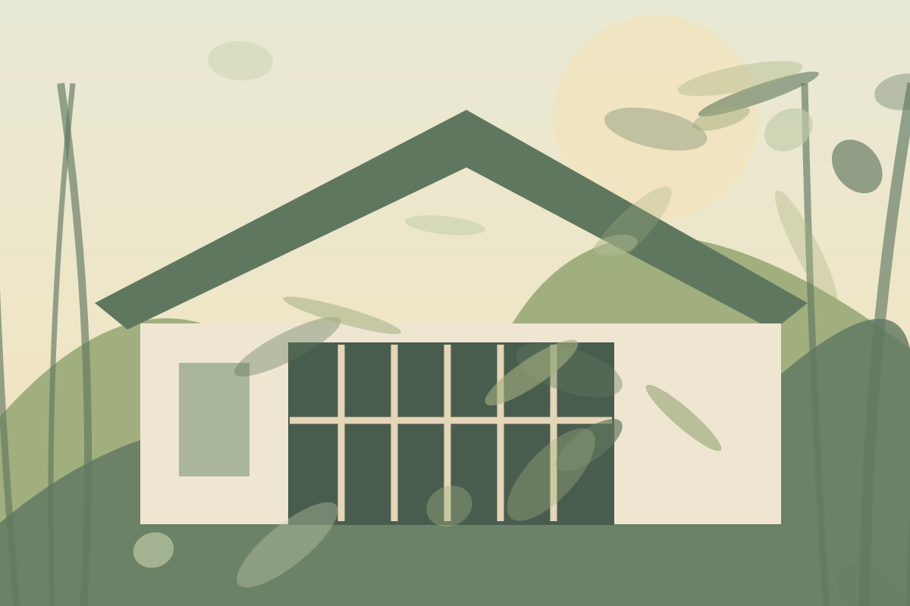
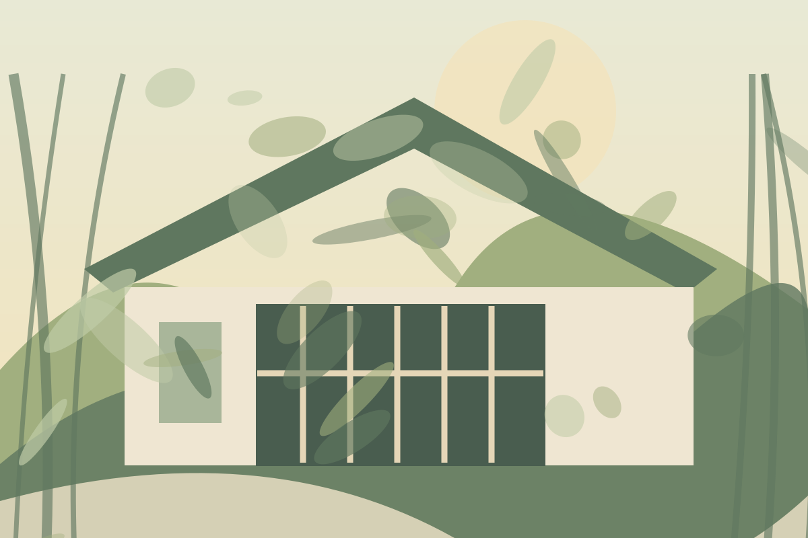
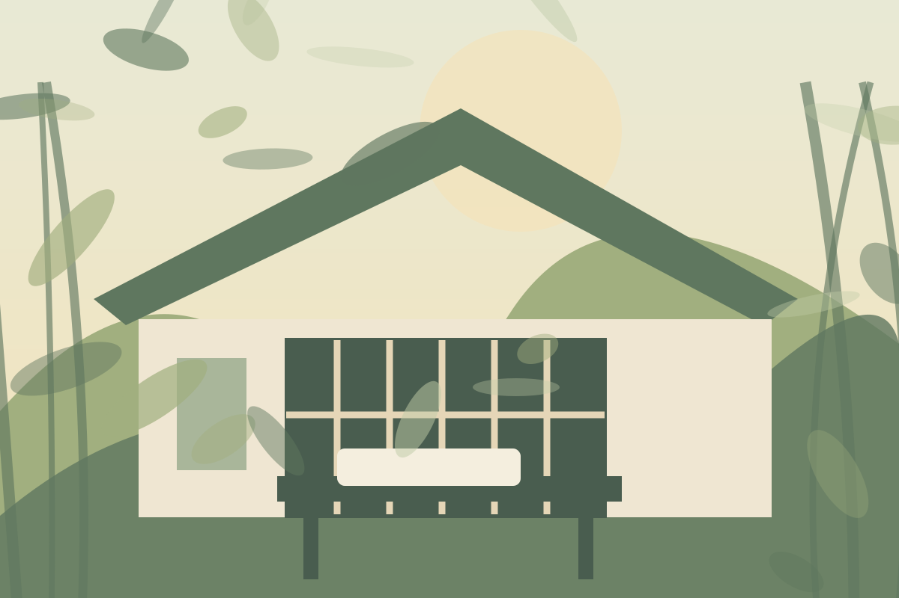
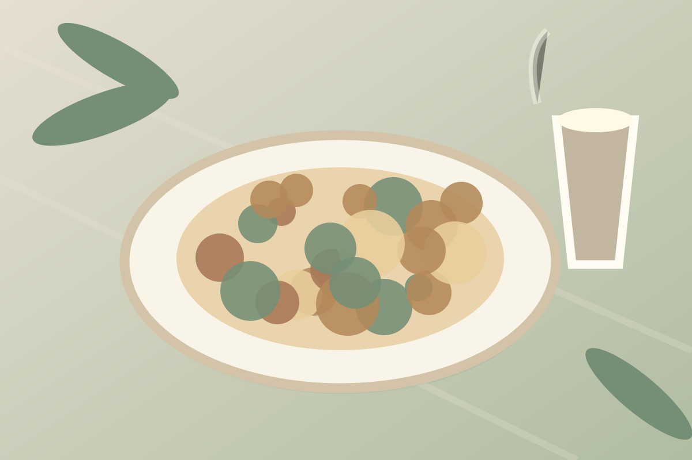

穿越竹林，讓時間慢下來。
陽明山的豆留森林，以充滿歷史氛圍的日式老屋、竹林小徑與沉靜的庭院，讓每一次散步都有走進京都般的感受。
從木格窗望向庭院，葉影像時光輕輕落在桌上。日式建築細節、竹林與精品咖啡文化一起構成難忘的午後，也很適合拍攝清新、帶有故事感的人像。



用一杯香氣層次豐富的咖啡，搭配精緻餐點與午後甜食，讓美食與庭院光影一起成為旅行記憶。
餐點示意與文字僅供專題介紹；菜單以店家官方公告為準。
地址：台北市士林區格致路70號營業資訊與預約方式請查看店家官方管道。